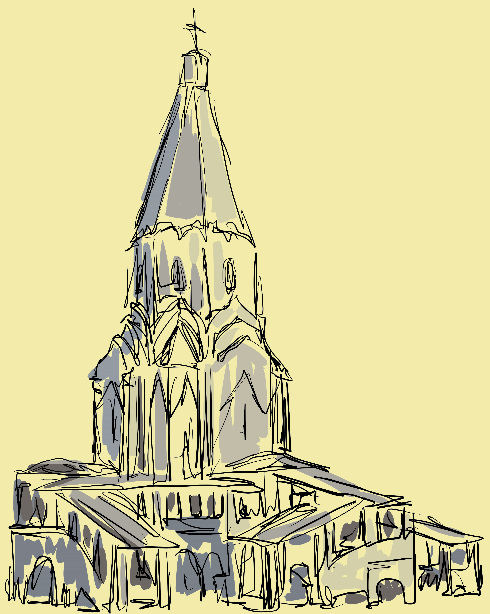

 ЦЕРКОВЬ ВОЗНЕСЕНИЯ ГОСПОДНЯ В СЕЛЕ КОЛОМЕНСКОМ НА МОСКВЕ-РЕКЕ БЫЛА ПОСТРОЕНА В 1532 ГОДУ. ЭТО ПЕРВЫЙ ШАТРОВЫЙ ХРАМ НА РУСИ, ПОЛОЖИВШИЙ НАЧАЛО ЗАМЕЧАТЕЛЬНОМУ ХРАМОВОМУ СТИЛЮ, ПРОСУЩЕСТВОВАВШЕМУ, УВЫ, ТОЛЬКО ДО РЕФОРМЫ ПАТРИАРХА НИКОНА В СЕРЕДИНЕ XVII ВЕКА.
СПОРЫ ВЕДУТСЯ И О ПРИЧИНЕ ВОЗВЕДЕНИЯ ВОЗНЕСЕНСКОЙ ЦЕРКВИ. ИНЫЕ СЧИТАЮТ, ЧТО ИМЕННО ОНА МОГЛА БЫТЬ ВОЗВЕДЕНА ВАСИЛИЕМ III НЕ КАК БЛАГОДАРСТВЕННЫЙ, А КАК ОБЕТНЫЙ ХРАМ (ЕСЛИ ПРЕДТЕЧЕНСКИЙ ХРАМ БЫЛ ПОСТРОЕН ПОЗДНЕЕ). ДРУГИЕ ДАЖЕ ПОЛАГАЮТ, ЧТО ВОЗНЕСЕНСКИЙ ХРАМ И ВОВСЕ НЕ ИМЕЛ ОТНОШЕНИЯ К РОЖДЕНИЮ НАСЛЕДНИКА, А БЫЛ ПОСТРОЕН ВАСИЛИЕМ III В БЛАГОДАРНОСТЬ ЗА ПОБЕДУ НАД КРЫМСКИМ ЦАРЕВИЧЕМ ИСЛАМ-ГИРЕЕМ, ОДЕРЖАННУЮ В 1528 ГОДУ. БОЛЬШИНСТВО ЖЕ СКЛОНЯЕТСЯ К ОБЩЕПРИНЯТОЙ ВЕРСИИ, ЧТО ВОЗНЕСЕНСКИЙ ХРАМ – БЛАГОДАРСТВЕННЫЙ, ВОЗДВИГНУТЫЙ ПОСЛЕ РОЖДЕНИЯ БУДУЩЕГО ЦАРЯ, КОТОРОЕ СОПРОВОЖДАЛОСЬ ЗНАМЕНИЯМИ, СИЛЬНО ИСПУГАВШИМИ МОСКВИЧЕЙ – ГРОЗОЙ С МОЛНИЯМИ И ДАЖЕ ЗЕМЛЕТРЯСЕНИЕМ.
ВТОРАЯ ЛИНИЯ СПОРОВ – ИМЯ АРХИТЕКТОРА ВОЗНЕСЕНСКОГО ХРАМА. ОДНИ НАЗЫВАЮТ ЕГО «НЕИЗВЕСТНЫМ», НО, НЕСОМНЕННО, РУССКИМ МАСТЕРОМ. ДРУГИЕ – И ИХ БОЛЬШИНСТВО – СЧИТАЮТ ЕГО АРХИТЕКТОРОМ ИТАЛЬЯНСКОГО ЗОДЧЕГО ПЕТРОКА МАЛОГО, ЧТО ПОСТРОИЛ В ТЕ ЖЕ 1530-Е ГОДЫ КРЕПОСТНУЮ СТЕНУ КИТАЙ-ГОРОДА В МОСКВЕ И ДВОРЕЦ ВАСИЛИЯ III В КОЛОМЕНСКОМ. А РАНЬШЕ КОЛОМЕНСКИЙ ХРАМ ВОЗНЕСЕНИЯ ОШИБОЧНО ПРИПИСЫВАЛИ АЛЕВИЗУ НОВОМУ, ПОСТРОИВШЕМУ АРХАНГЕЛЬСКИЙ СОБОР В КРЕМЛЕ. АРХИТЕКТУРНЫЕ ЭЛЕМЕНТЫ И ТЕХНИКА ВОЗНЕСЕНСКОГО ХРАМА УКАЗЫВАЮТ НА ЗНАКОМСТВО ЕГО АВТОРА С ИТАЛЬЯНСКОЙ АРХИТЕКТУРОЙ. ПОСЛЕ ОКОНЧАНИЯ СТРОИТЕЛЬСТВА НА МОЛЕЛЬНУЮ ЦЕРКОВЬ ДИНАСТИИ РЮРИКОВИЧЕЙ СЪЕЗЖАЛИСЬ ПОСМОТРЕТЬ ИЗ РАЗНЫХ МЕСТ. О НЕЙ ГОВОРИЛИ КАК О ЧУДЕ. «БЕ ЖЕ ЦЕРКОВЬ ТА ВЕЛМИ ЧЮДНА ВЫСОТОЮ И КРАСОТОЮ И СВЕТЛОСТИЮ, ТАКОВА НЕ БЫВАЛА ПРЕЖЕ СЕГО В РУСИ » , ― ВОСХИЩАЛСЯ В ЛЕТОПИСИ СОВРЕМЕННИК. УДИВИТЕЛЬНЫМ ОБРАЗОМ СЛАВА ЦЕРКВИ НЕ БУДЕТ УВЯДАТЬ ВОПРЕКИ ЗАКОНАМ ВРЕМЕНИ. ЧЕРЕЗ ТРИСТА С ЛИШНИМ ЛЕТ С МОМЕНТА ПОСТРОЙКИ ПАРИЖСКИЙ КОМПОЗИТОР ГЕКТОР БЕРЛИОЗ ПОСЛЕ ВИЗИТА В МОСКВУ НАПИШЕТ: «НИЧТО МЕНЯ ТАК НЕ ПОРАЗИЛО В ЖИЗНИ, КАК ПАМЯТНИК ДРЕВНЕРУССКОГО ЗОДЧЕСТВА В СЕЛЕ КОЛОМЕНСКОЕ. МНОГО Я ВИДЕЛ, МНОГИМ ЛЮБОВАЛСЯ, МНОГОЕ ПОРАЖАЛО МЕНЯ, НО ВРЕМЯ, ДРЕВНЕЕ ВРЕМЯ В РОССИИ, КОТОРОЕ ОСТАВИЛО СВОЙ ПАМЯТНИК В ЭТОМ СЕЛЕ, БЫЛО ДЛЯ МЕНЯ ЧУДОМ ИЗ ЧУДЕС».
КОЛОМЕНСКОЕ УЖЕ ДАВНО СТАЛО ЧАСТЬЮ МОСКВЫ, ЗДАНИЕ ЦЕРКВИ НЕОДНОКРАТНО РЕМОНТИРОВАЛИ И ПЕРЕСТРАИВАЛИ, НО ОНО НИЧУТЬ НЕ УТРАТИЛО ОБАЯНИЯ.
В НАЧАЛЕ 90-Х ХРАМ ЗАНЕСЛИ В СПИСОК ОБЪЕКТОВ ВСЕМИРНОГО НАСЛЕДИЯ ЮНЕСКО, А В 2007 ГОДУ ВОССОЗДАЛИ ДРЕВНИЙ ИКОНОСТАС С ЦАРСКИМИ ВРАТАМИ И ЗАНОВО ОТКРЫЛИ ЦЕРКОВЬ ДЛЯ ПОСЕЩЕНИЙ. ТЕПЕРЬ СЮДА ПРИХОДЯТ РАССМАТРИВАТЬ ЭКСПОНАТЫ В ЦЕРКОВНОМ МУЗЕЕ И СЛУШАТЬ СЛУЖБЫ ПО БОЛЬШИМ ПРАЗДНИКАМ. ПОД РЕЗНОЙ КОЛОКОЛЬНЕЙ ХРАМА РАСКИНУЛАСЬ ТЕРРАСА-ГУЛЬБИЩЕ, КОТОРАЯ ПОТОМ БЫЛА ПРЕВРАЩЕНА В ГАЛЕРЕЮ. ПО ТРЕМ КРЫТЫМ ЛЕСТНИЦАМ НЕКОГДА ГУЛЯЛИ ВЕЛИКИЕ КНЯЗЬЯ, А ТЕПЕРЬ ЗДЕСЬ ОТДЫХАЮТ ВСЕ ЖЕЛАЮЩИЕ.